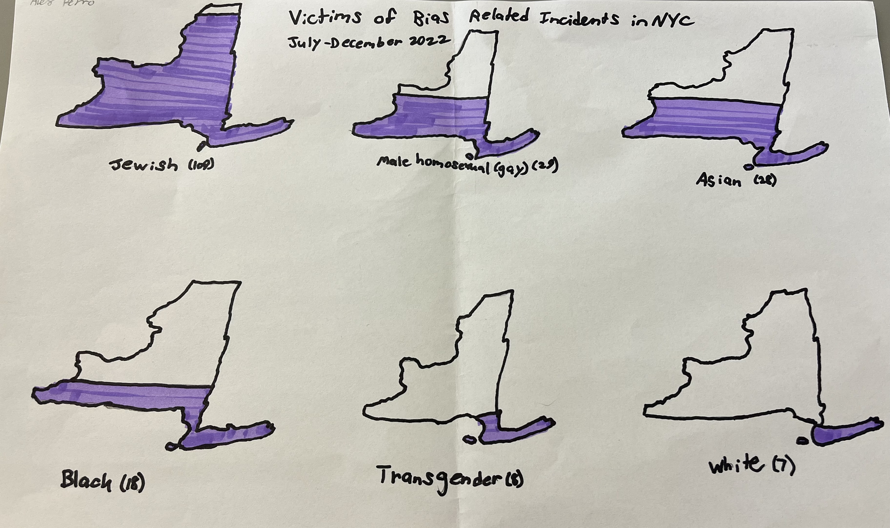

Subhed here
In NYC, Jewish people experienced the greatest number of hate crimes in 2022. This graph visually demonstrates the proportion of Jewish victims in comparison to other demographics. By using this bar chart, we can clearly see this trend in order to analyze it.
For my creative dataviz, I felt that the topic of hate crimes warrented a less "whimsical" approach. This led to me create a small multiples chart where I showed the same proportions demonstrated in the bar chart. Instead, however, I highlighted certain demographics in order to emphasize the number of Jewish victims. By using a neutral color and including less demographics overall, we can clearly visualize the intended finding.
